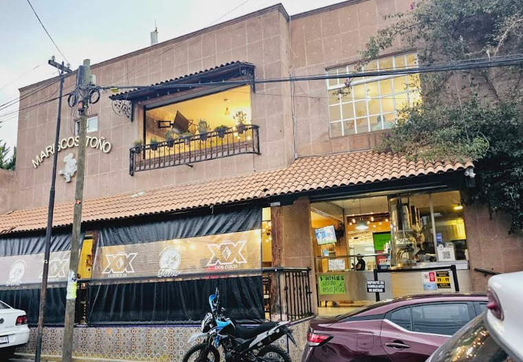

Ambiente familiar, rapidez y el sabor inconfundible del mar en San Luis Zinacantepec.
"Los platillos están deliciosos y las porciones están súper bien servidas. Recomendables las tostadas de camarón, de ceviche y la empanada de camarón con queso."
"La comida me resulta súper rica al precio que tiene, los meseros son atentos y la rapidez para llevar los platillos se agradece."
"El lugar es muy bueno, las instalaciones son amplias y bien ambientadas. Mi recomendación principal es el Vaso de Caldo."
📍 Dirección: Tenochtitlan 210, 51355 San Luis Mextepec, Estado de México.
🕒 Horario: Abre a las 9:30 a.m. (Mayor concurrencia: Sábados de 12pm a 6pm)
📞 Teléfono: 729 149 2021
💰 Consumo promedio: $200 - $300 por persona
✔️ Consumo en el lugar | ✔️ Para llevar
Cómo Llegar (Google Maps)